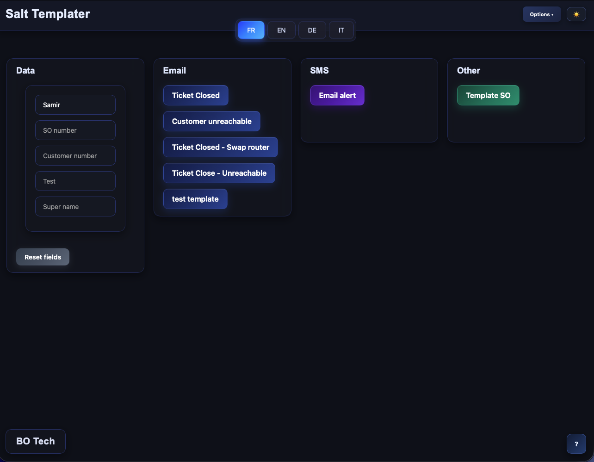
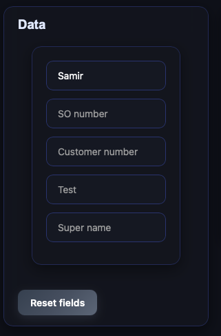
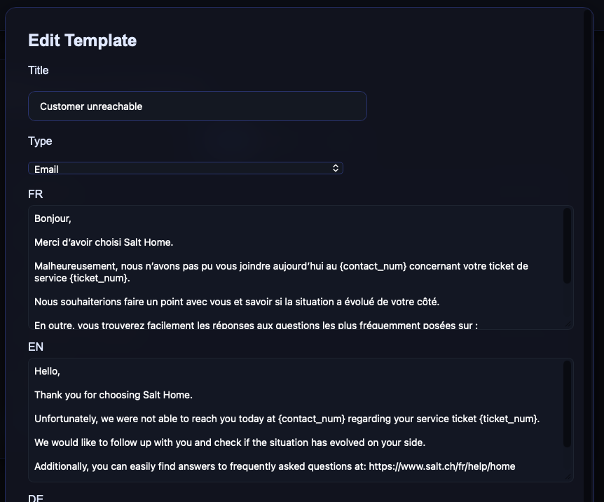
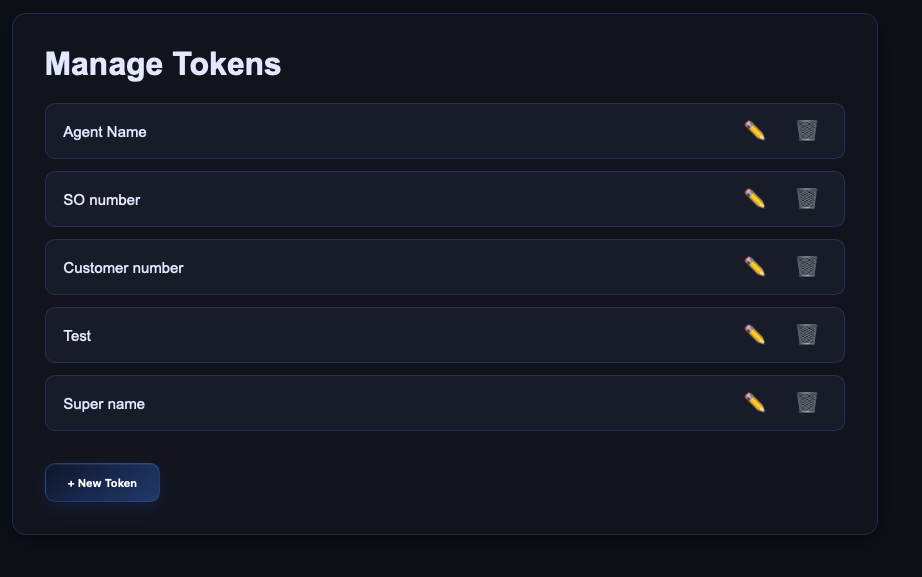
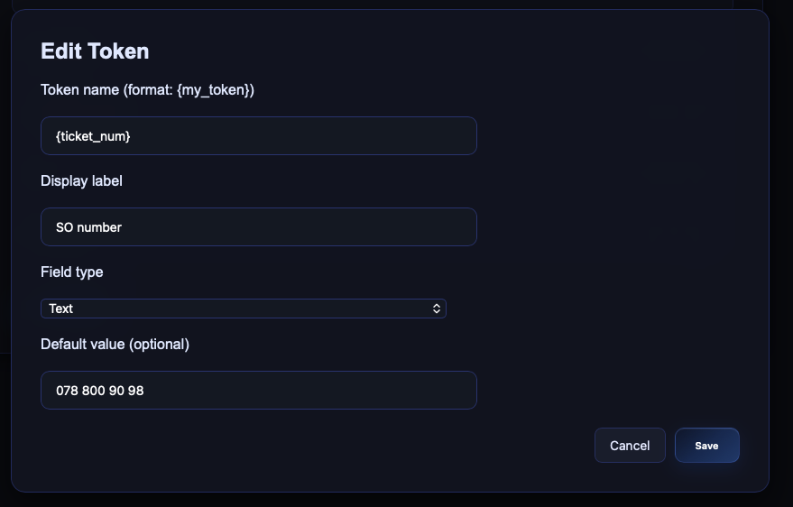

Salt Templater — Quick guide
What it does
Create emails, SMS, or other messages with reusable templates and fill them with your data instantly.

Main dashboard (zones + header)
How to use
- Fill the fields in the “Data” column (one field per token like
{customer_name}).
- Pick a language (FR / EN / DE / IT).
- Click a template button to copy the final text (copy is blocked if required data is missing).

Data column with token fields filled
Create or edit a template
- Options → Manage Templates.
- Each template has a title, a type (Email/SMS/Other), and text per language.
- Insert tokens where data should appear, e.g.
Hi {customer_name}, your invoice is due on {due_date}.

Manage Templates screen
Tokens
- Format:
{token_name} (e.g. {ticket_id}, {agent_name}).
- New tokens found in templates are added automatically to the Data form.
- Manage Tokens lets you set label, field type (text/number/date), and default value.

Manage Tokens screen
Tips
- Use clear names and defaults to avoid empty outputs.
- Order your templates to surface the most-used ones first.
- Test in each language to ensure all tokens are present.

Copy action with filled tokens